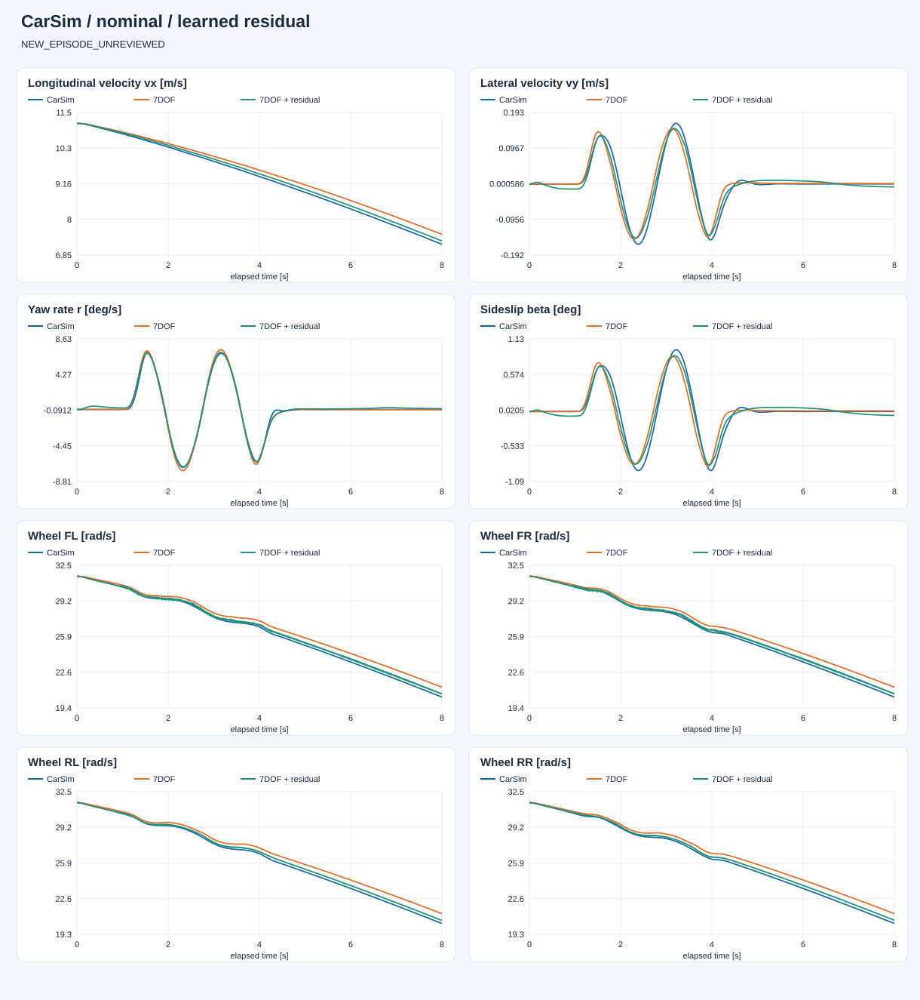
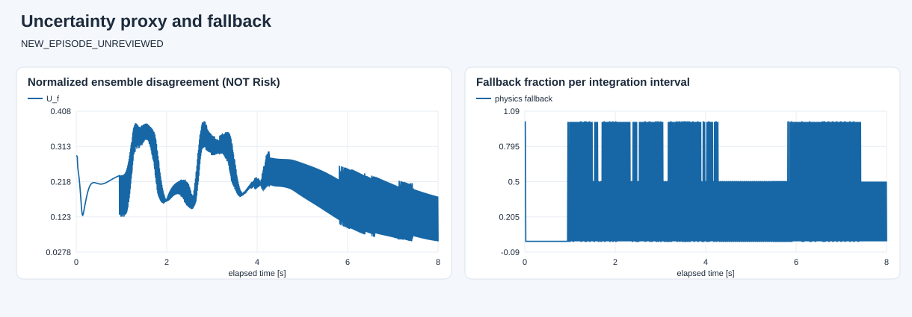

E:\modelcodeE\DRL_MPC\DRL_MPC\carsim_rl\artifacts\dynamics7dof\open_loop_20260928_094104_829627\capture
数据角色：NEW_EPISODE_UNREVIEWED。 蓝色为 CarSim，橙色为原模型，绿色为学习补偿。两种模型都只初始化一次，不重置到真值。 共同有效覆盖率：100.0%。训练回合改善不等于泛化；只有完整留出回合才用于独立验证。 未接管控制、未生成 Risk 标签；高分歧/超范围回退只是工程防护，不是安全证明。

| 状态 | 原 7DOF | 学习补偿 |
|---|---|---|
| vx_m_s | 0.21261768344188506 | 0.08193329232953532 |
| vy_m_s | 0.022420677145061473 | 0.01308988394333588 |
| yaw_rate_rad_s | 0.004009878659785544 | 0.003567818175349719 |
| omega_fl_rad_s | 0.5972244386763719 | 0.19363345568979076 |
| omega_fr_rad_s | 0.5941642355754182 | 0.19622106278891463 |
| omega_rl_rad_s | 0.5940219418158864 | 0.20552970836046044 |
| omega_rr_rad_s | 0.5914686213552607 | 0.20997388813649734 |

完整指标见 evaluation.json。低网络分歧不保证低真实误差，尚未完成不确定性校准。